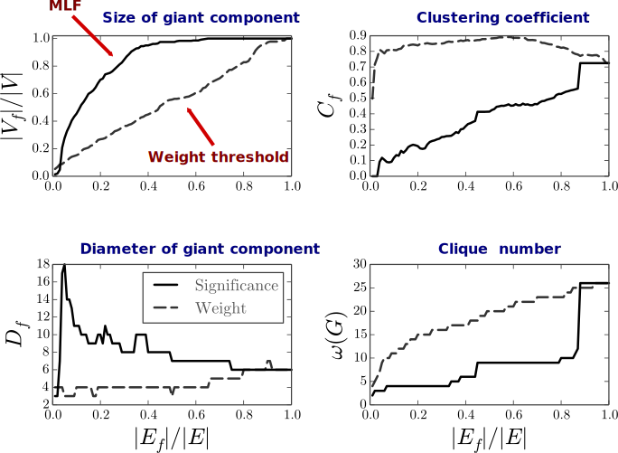

Pruning weighted complex networks
Navid Dianati2,1
1The LazerLab, Northeastern University
2IQSS Harvard University
Simplifying Complex Networks
No one likes hairball graphs
"Ridiculogram"
Two kinds of troublesome networks
Network is too dense!
We need to measure network characteristics, but our network is too dense: high computational cost
Network contains too much noise!
There is a meaningful core that is obscured by lots of noisy edges
First case
First case
We have a very dense matrix. It is the "correct" matrix, but its density makes it hard to efficiently compute its network charachteristics such as its community structure.
Example:
- Large dense similarity matrix.
- Dimensionality reduction.
- Correlation matrix in genetic or protein interaction networks?
We need to approximate the graph
Dense similarity matrix
Find a sparse approximation of the original graph
Sparsification
Sparsification
There are a number of relevant methods:
-
using spanning trees
- Kelner, Jonathan A. and Madry, Aleksander, "Faster generation of random spanning arXiv:0808.4134 [cs] (2008). arXiv: 0808.4134
-
using methods to preserve the spectrum of the Laplacian
- Spielman, Daniel A. and Teng, Shang-Hua, "Spectral Sparsification of Graphs", trees", in Foundations of Computer Science, 2009. FOCS 09. 50th Annual IEEE Symposium on (IEEE, 2009), pp. 13--21.
-
using expanders in general
- Goyal, Navin and Rademacher, Luis and Vempala, Santosh, "Expanders via random spanning trees", in Proceedings of the twentieth Annual ACM-SIAM Symposium on Discrete Algorithms (Society for Industrial and Applied Mathematics, 2009), pp. 576--585.
Second case
Second case
We have a network with a backbone of interest, thought to be obscured by lots of noisy edges.
The task is to throw away edges that are not significant and see what remains.
Example:
- Lexical networks: word co-occurrence networks
- Co-authorship networks
Pruning
NOT an approximation problem
What graph property do we want to preserve as we remove edges?
Do we even want to do that?
Consider a network where edges have integer weights counting the number of some event relating the end nodes.
Pruning a dense weighted graph
How to get rid of less significant edges in a graph?
How to extract the most significant subgraphs from a weighted graph?
Weight thresholding isn't good enough
Marginal Likelihood Filter
Statistical significance
We use the Marginal Likelihood Filter
To appear in Physical Review E.
Statistical significance
Not all edges are created (statistically) equal
which bond is more significant?
Marginal Likelihood Filter (MLF)
Let $G$ be a graph with integer edge weights.
Null Model: Given the weighted degrees of the nodes, if everything else were random, what would the edge weights look like?
- Take all the unit edges out of the graph, then "sprinkle" them back over the nodes!
- Let each unit edge choose two nodes, each with probability proportional to its degree.
MLF: two nodes would be connected with probability proportional to the product of their weighted degrees.
$p=\frac{k_{i}k_{j}}{2T^{2}}, \,\,\, T=\frac{1}{2}\sum_{i}k_{i}$
The Configuration Model*
The filter
According to the null model
The weight of an edge follows a binomial distribution.
$\Pr\left[\sigma_{ij}=m\,|\,k_{i},k_{j},T\right] = {T \choose m}p^{m}(1-p)^{T-m}$
Given the null model, compute a p-value for each edge. Lower p-value corresponds to higher significance.
Some details
The p-value
$s_{ij}(w_{ij})=\sum_{m\geq w_{ij}}\Pr\left[\sigma_{ij}=m\,|\ \,k_{i},k_{j},T\right]$
compute using the binomial test.
e.g. in Python's STATSMODELS package
Example:
The full occupations co-occurrence graph of Massachusetts:

Pruned using weight thresholding
3% truncation

Pruned using MLF
Again, 3% truncation
Another example
US air traffic network
Pruned using weight thresholding
15% truncation
US air traffic network
Pruned using MLF
15% truncation
Discussion
Weight thresholding vs MLF
Maximum entropy formulation
Question: If the only reliable information we had about the the network was the expectation value of property $x$, then what would be expect from a random ensemble of graphs to look like?
Maximum entropy ensemble
Alternatively, what is the maximum entropy ensemble of graphs subject to the constraints $\left\langle x_1\right\rangle=c_1$, $\left\langle x_2\right\rangle=c_2$, $\cdots$?
$P(G)\sim e^{\theta_{1}x_{1}(G)+\theta_{2}x_{2}(G)+\cdots\theta_{m}x_{m}(G)}$
Maximum entropy formulation
Find the maximum entropy ensemble of graphs with the degree sequence equal to that of the observed graph on average.
\[P(G)=\frac{1}{Z}g\left[\left\{ \sigma_{ij}\right\} \right]\exp\left[-\sum_{i < j}(\theta_{i}+\theta_{j})\sigma_{ij}\right]\,\,\,\forall G\in\mathscr{G}\]
Fit the parameters $\theta_i$ to the node degrees...
\[P(G)=\frac{1}{Z}\frac{\left(\sum_{i < j}\sigma_{ij}\right)!}{\prod_{i < j}\sigma_{ij}!}\prod_{i < j}\left(\frac{k_{i}k_{j}}{2T^{2}}\right)^{\sigma_{ij}}\,\,\,\forall G\in\mathscr{G}\]
Multinomial distribution
Maximum entropy formulation
Theorem: When the joint probability distribution is multinomial, the marginal probability distribution is binomial
So, the distribution used in MLF is the marginal distribution of a maximum entropy ensemble.
If there is time...
Global Likelihood Filter
We can use the maximum entropy ensemble to compute a measure of significance for each possible subraph and pick the most significant one.
GLF
- NP-hard?
- Requires Monte-Carlo methods
- Two-tailed test
- Results similar to MLF for moderate truncations
Conclusion
In conclusion...
- We argued that sparsification and pruning are two different problems.
- We introduced a statistical filter for pruning integer weighted networks: marginal likelihood filter
- MLF assumes that the most meaningful aggregate feature of the graph is its degree sequence.
- MLF is fast: nearly linear in the number of edges.
- MLF is closely related to maximum entropy ensemble methods.
Question: are these filters usefull in understanding biological networks list genetic or protein interaction networks?